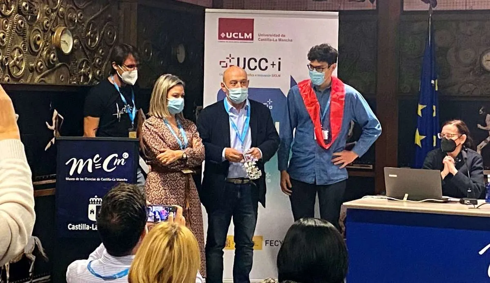

El proyecto
Conocimiento científico en el arte y el patrimonio.
La ciencia que esconde la Catedral de Burgos es una serie documental que nos adentra en el conocimiento científico, técnico y tecnológico empleado en la construcción, mantenimiento y restauración de la catedral de Burgos. Su estreno coincide con el octavo centenario de la colocación de la primera piedra del monumento burgalés y celebra la existencia del templo como compendio de todas las ciencias y artes que, con el paso de los siglos, se han puesto al servicio del edificio.
El objetivo de la serie es acercar a la ciudadanía la grandeza de la Catedral de Burgos, más allá de su aspecto religioso, para ayudar a comprender la importancia del conocimiento científico en el arte y el patrimonio.
La serie ha sido producida por la Unidad de Cultura Científica de la Universidad de Burgos (UCC+i) con la colaboración de la Fundación Española para la Ciencia y la Tecnología – Ministerio de Ciencia e Innovación y el Cabildo Metropolitano de la Catedral de Burgos.
Repercusión
La ciencia que esconde la Catedral de Burgos ha obtenido una gran repercusión, tanto institucional como a nivel mediático y de audiencia. El documental fue distinguido como mejor proyecto destacado en ComCiRed 2021, un galardón que premia los mejores trabajos de las unidades de cultura científicas de las universidades.
La serie se ha emitido en La 8 BurgosyLa 2 de Televisión Española, además de en el canal de YouTube de UBUinvestiga, donde acumula más de 150.000 visitas. Su estreno concitó un enorme interés de medios locales y nacionales.110 horas de grabación que han cristalizado en 8 episodios y disponibles de forma gratuita.

Repercusión
La ciencia que esconde la Catedral de Burgos ha obtenido una gran repercusión, tanto institucional como a nivel mediático y de audiencia. El documental fue distinguido como mejor proyecto destacado en ComCiRed 2021, un galardón que premia los mejores trabajos de las unidades de cultura científicas de las universidades.
La serie se ha emitido en La 8 BurgosyLa 2 de Televisión Española, además de en el canal de YouTube de UBUinvestiga, donde acumula más de 150.000 visitas. Su estreno concitó un enorme interés de medios locales y nacionales.110 horas de grabación que han cristalizado en 8 episodios y disponibles de forma gratuita.